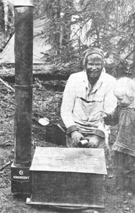
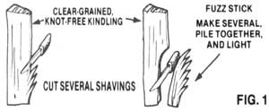
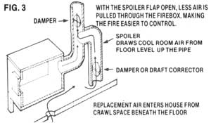
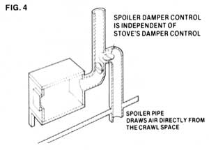
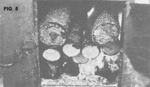
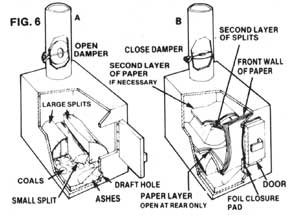

How To Use Wood Stoves (And Use Them Safe!)
Author of "How to Build an Oil Barrel Stove", Wik takes the reader through the steps of using and maintaining a wood burning stove.
By the Mother Earth News editors
November/December 1977
From Wood Stoves: How to Make and Use Them by Ole Wik, copyright 1977 by the author. Reprinted with the permission of Ole Wilk and of Alaska Northwest Publishing Company, Anchorage, Alaska, and available in paperback ($5 95) from any good bookstore or from Mother's Bookshelf.
In 1976, veteran arctic outdoorsman Ole Wik wrote How to Build an Oil Barrel Stove... and that worthy book-which found an enthusiastic readership-now appears as just one chapter of Ole's latest effort: Wood Stoves: How to Make and Use Them.
Ole's lived in the Alaskan bush, "where self-sufficiency is still a way of life", for 12 years, "always with homemade wood stoves", and he writes with great authority on the subjects of building one's own stove or making an existing one perform exactly as you want it to.
The following excerpts from Ole's new book-which may be the only one ever published on the design and construction of wood-burning stoves-will give you a good idea of the thoroughness and precision with which Ole Wik puts his ideas across. Read on and learn ... and remember: There's so much more wood stove wisdom where this came from!
USING WOOD STOVES
Keeping a fire in a wood stove is like having a pet in the house with you. A fire needs your attention at regular intervals, and is in danger of either dying or running amok if your judgment slips. You have to feed it the right things at the appropriate times, and you have to carry its waste products out of the house. In return it will work for you, cooking your meals and heating your water and living space.
The kind of experience you have with your fire depends entirely upon your equipment and fuel and how you use them. Your fire may be a gentle, dependable, obedient servant, doing what you want it to do when you want it done ... or it may be capricious and stubborn, misbehaving continually, a source of frequent irritation.
I'll never forget the time I watched a schoolteacher, new to the north, trying to fry meat on an oil-barrel wood stove in an Eskimo friend's house. "What's wrong with this thing?" she asked. "I just filled it." She was prodding the meat with a big fork, and I could tell by the absence of sound in the pan that the meat wasn't cooking. At the same time, she was shielding her thighs from the intensely hot sides of the stove.
I could see the bright glow of a fine bed of coals at the draft hole, and began to wonder why the frying pan wasn't heating up. So I got up, looked into the firebox, and saw that she'd laid green birch on top of the coals. The birch shielded the stove top, so the coals radiated heat only to the sides of the stove.
I took the poker and slid the birch off the coals so that it would shield the sides of the stove rather than the top, and then I laid a couple of sticks of dry spruce in its place. The sides cooled right down, flames from the dry wood started heating the stove top, and- shortly- the meat in the pan began to sizzle.
My friend had used the wrong wood in the wrong place at the wrong time and, naturally, the results were unsatisfactory. She simply hadn't been around wood stoves long enough to develop the feel needed to operate them properly. I began to think of all the other situations a person encounters in the course of a 24-hour period with a wood stove, and wondered if perhaps I couldn't put my own experience into word, and help others learn to be more comfortable with their own wood-burners. Then and there I began outlining this book. In the pages that follow I'll share every trick I know for getting maximum performance and enjoyment from a wood stove, as others have freely shared with me over the past ten years.
STARTING A FIRE
Fire-starting requires dry wood, so it's a good idea to have a box of kindling tucked away. Everybody has his own way of laying a new fire, and here is mine. Place two splits of dry wood on either side of the firebox, say 3 or 4 inches apart. If there's any old charcoal among the ashes, arrange it so it lies between the splits. Next, lay some shredded paper on the charcoal. (Newspaper is ideal, but avoid glossy paper such as in magazines.) Lay the kindling on top of the paper, and place a few small splits of wood on top of the kindling, Now light the paper and close the stove door. Open the draft just enough to encourage the fire without blowing it out. Once the stove is drawing well, add as much wood as the situation calls for.
Another way to kindle a fire is to use sawdust soaked in kerosene or waste crankcase oil. Place a couple of spoonfuls of the sawdust mixture among the kindling sticks, in place of the newspaper. Light the sawdust with a match, and you'll have an instant, trouble-free start-up. I should not have to add that gasoline or other explosive substances should never be used in stoves. The danger is obvious, yet I know a man who burned down a fine log house in this way. Also, never add kerosene to anything but a cold stove, since the heat may vaporize it, forming an explosive white cloud that could flash back in your face.
The same goes for crankcase oil that's heavily contaminated with gasoline.
Purists like to start fires without resorting to newspaper or petroleum products. One good way to do so is to carve a fuzz stick from a piece of kindling (Fig. 1). Put it in the firebox in place of the paper, and light the wood shavings with a match.
GETTING A STOVE TO DRAW
A stove draws because the warm gases produced by the fire are less dense than the cooler outside air and, consequently, tend to rise up the pipe. Once a fire is going and the stove is hot, the draft maintains itself, but occasionally a stove won't draw when it's being started up. This is especially true in the summertime, when there isn't much difference in temperature (and hence density) between inside and outside air.
I spent three winters in a little cabin at the base of a fairly high bluff. On still, clear nights, cold, dense air from the tundra would cascade down the ravine behind the cabin and continue right on out to the river. I could always tell that a cold night was in store when the smoke curled out of the stovepipe, lay down flat, drifted horizontally across the roof, and then slid along the ground toward the riverbank. The cold air worked on my stovepipe all night, cooling the thin smoke from the banked fire so that it had little tendency to rise. If the stove happened to go out, I'd have trouble lighting it in the morning. As soon as I opened the firebox door, cold air would rush down the pipe and into the room.
The time-honored trick for getting a stove started in such a situation is to stuff a piece of newspaper loosely into the stovepipe and then light it. The paper will burn very quickly, sending a rush of warm air up the pipe. If the kindling in the firebox is lighted just before or just after the newspaper, the momentary draft will get it going. Heat from the budding fire will keep the draft going until the fire is well established.
In the stove arrangement I was using at the time, I usually stuck the newspaper into the pipe at the draft corrector, which was the handiest place. I also could have stuffed it way back at the far end of the firebox, near the exit to the flue. On other stoves, I've had to disconnect the elbow from the stove, put the paper into the pipe, light it, and then quickly reconnect the elbow. In some cases it might be necessary to insert the paper at a joint between two stovepipe sections, or to light it and stick it into the stovepipe from the roof, burning end down.
If a stove draws poorly even when hot, there's something wrong in the system. It may be that the pipe merely needs cleaning. Or it may be that the pipe is too short, and that adding a section or two will correct the problem. Switching to a pipe of larger diameter will also increase the draft, but this will involve some modification of the fixture where the pipe passes out of the house.
REKINDLING A SMALL FIRE
Sometimes a fire gets too low to ignite regular firewood sticks, but if even a few glowing coals remain, it can be brought back to life with a little coddling. Place the coals in the center of the firebox, and lay a split of dry wood on either side. Place some kindling on the coals, and then add a few splits of firewood ... just as in laying a new fire. Then shut down the stove (close the draft), since too much draft at this stage will only cause the weak coals to burn themselves out without lighting the kindling.
With the draft closed, the wood will absorb enough heat from the coals to reach its kindling temperature. Then, when air is again admitted, the fire will spring to life. (Blowing lightly on the coals at this point may help establish the live flame.) If the cabin doesn't need the warmth just then, leave the stove shut down. The fire will ignite by itself later on.
HEATING: LIFE CYCLE OF A FIRE
I always think of a fire as a living thing ... it seems to me to have a distinct life cycle. Let's suppose a fire is going well: It's in the prime of life, and heat output is at a maximum. In time, the wood will turn to charcoal, and the charcoal to ash. Without new fuel, the fire will die a natural death.
But by placing new wood on the fire while it's still fairly hot, we give the wheel another turn. At first, the fire cools down as the new wood absorbs heat. (With dry wood, this cooling phase may be so short as to be almost unnoticeable. With greener wood-especially if the stove is shut down tight-it may last for hours, even overnight.) Eventually the moisture is driven off, the wood reaches its kindling temperature, and the fire takes off, rejuvenated. As the fuel is consumed, heat output once more dwindles.
So wood heat is inherently uneven, rising and falling with each new charge of fuel. This unevenness- which is most noticeable in small cabinscan be counteracted by giving the fire a number of small feedings rather than a few large ones. That way the firebox always contains wood in several stages of the life cycle, and the ups and downs balance each other.
The interval between feedings may be long or short, depending on the stove, the fuel, the house, and the weather. After developing a feeling for a stove, you'll know when it's time to take a look into the firebox. Sometimes you'll close the door again without doing a thing, sometimes you'll just stir the wood around a bit with the poker, sometimes you'll draw the coals nearer to the draft and add more wood. In any case, when you've finished you'll know what the fire is doing and what you can expect of it.
Timing is always important. Dry wood is an agreeable fuel and will readily ignite, even if the fire has been neglected. But slower woods require that the stove be fed before the heat is actually needed. How long before depends on how long it takes the wood to reach its kindling temperature, which in turn depends upon its moisture and pitch content, physical size, and hardness. By way of compensation, wood that's hard to get started is usually easy to control by shutting the draft . . there's little risk of ruining your fire by adding such fuel before it's needed.
One good practice is to keep several types of wood on hand.
When I chop wood, I try to include some dry, some half-dry, and some punky wood in each batch, with some chunks split fine and others left large, even in the round. That way, I can always find just the wood I need for the firebox. If the fire is low, I'll reach for dry wood and small splits. If the fire is perking along nicely and I wish only to maintain it, I'll select larger chunks of half-dry.
MODERATING A FIRE
Wood stoves can be shut down by closing either the draft control or the damper, or both. Shutting the draft moderates the fire by shutting off the flow of oxygen. Shutting the damper produces the same effect by preventing the smoke from escaping up the pipe, for-if smoke can't get out of the firebox-new air can't get in to take its place.
Although closing either the draft or the damper has the same effect on oxygen flow, the incidental results are somewhat different. If the draft is closed while the damper remains open, the live flame may die out altogether. The smoldering wood will give off a lot of smoke, meaning that a good deal of its heat value goes up the chimney in the form of unburned Volatile substances. If the draft is left open while the damper is closed, on the other hand, the live flame will remain, and combustion will be much more complete.
TAMING A STOVE THAT WON'T SHUT DOWN
If I had to choose the most irritating kind of wood stove, it would be one that continues to throw off large amounts of heat even though I have tried to shut it down. Somehow I can tolerate a cold cabin in the knowledge that the stove will take the chill off quickly, but a hot room not only sets me on edge ... it seems to take forever to cool down. And I find sleeping in a hot room impossible.
One winter I lived near Fairbanks in a small cabin that was heated by a cast-iron box stove. I don't know if all box stoves are as leaky as that one was, but I'll never willingly have another. Temperatures of-30 to - 40°F dictated that I keep a fire overnight, but too often the stove would take off after only 2 or 3 hours. I'd wake up in a steamy room and see brilliant coals shining through the cracks between the various castings. The stove seemed to be leering at me, like some malevolent castiron pumpkin, and I hated it with a passion.
I'd jump out of bed, throw open the cabin door to let some f resh air in, lift one lid from the stove top, and pour water f rom the kettle onto the fire to cool it. A hissing cloud of steam and ashes would rush up at my face, making the whole cabin smell like a boiler room. Then I'd close the lid and go back to bed. Often the stove would take off a second time, and then I'd really douse it. Next morning the fire would be dead, the cabin would be cold, and I'd be cranky. On top of it all, my first chore of the day would be to kindle a new fire on a bed of soggy charcoal.
No doubt that stove would have been fine for a room five times the size of that particular cabin, or for a workshop or church that was heated only occasionally and never overnight. But it was definitely not the stove for my situation. In any case, this sort of thing is certainly not uncommon, and it pays to know how to deal with an intractable stove.
If you encounter a stove that runs on, even though both the draft and damper have been closed, there are ways to control the fire without adding to or replacing any of the equipment:
1. USE LESS FUEL. Perhaps the problem is nothing more than unfamiliarity with a new stove or a new type of fuel. After a few fires that are too large to control, one generally develops a feel for the situation. If improper stoking of the stove is at fault, some of the hints on keeping a small fire may help. If the problem goes deeper than that, escalate. Read on.
2. USE DIFFERENT FUEL. Sometimes switching to a slowerburning fuel will be enough to moderate a stove that tends to go out of control. For me, this means switching from dry spruce to half-dry spruce, alder, or birch. In a different case, though, these woods could easily aggravate the problem. After a time-lag, they might themselves take off, producing a really intense fire that could not be controlled.
3. REMOVE FUEL. Zany as it may sound, there have been times when I've done this ... usually when breadmaking has fallen behind schedule and my wife, Manya, has found it necessary to bake in the evening. As soon as the bread comes out of the oven, I yank some of the wood from the firebox with a pair of tongs, place it in an empty 5-gallon can, carry it quickly outside, and dump it on the snow. (The charred wood goes back into the stove the next morning.) Then I use the remaining coals to set the fire for overnight, even if it's an hour or two until bedtime. The stove and the room both cool gradually, so that we can sleep comfortably.
4. ADD FUEL. A good stove, as well as an intractable one, will often run on once the fire has reached the charcoal stage, because the coals radiate surprising amounts of heat even with a minimum of oxygen. The simplest way to moderate a charcoal fire is to lay some new fuel on the coals and shut the stove down again. Naturally, a moister wood is best, since it takes longer to reach its kindling temperature. The new wood will absorb a lot of heat from the coals in the meantime, heat that otherwise would have been radiating into the room. By the time the new fuel finally takes off, the room ought to be ready for the extra heat. if it's not, the problem worsens.
5. ADD WATER. Throwing water on a fire, from the standpoint of a wood-stove purist, is an inelegant thing to do. It's also very effective. But it's a bad sign: Heavy reliance on this technique indicates that something is not right with the system and that fundamental changes are in order.
6. SEAL OFF THE COALS. One of my favorite tricks for cooling a fire is to lay paper over it. News magazines and mail-order catalogs are just right, since the glossy paper produces a flaky, smothering ash that continues to seal the coals long after the paper is carbonized. (This is why magazines can foul a fire so badly when incinerated in a wood stove.)
When it's time to revive the fire, simply stir around with a poker and lift the remaining coals to the surface. They'll be half black, half red, and strangely inactive, so it sometimes takes a bit of kindling or good wood to get a hot fire going again.
Ashes can also be used to seal off the coals. A friend of mine, who grew up in the country, told me that his mother kept an overnight fire in her big wood range by putting ashes on top of a charge of wood. With a shake of the grate in the morning, the ashes sifted away from the coals and the fire was reborn.
7. SEAL THE DRAFT HOLE. Perhaps the stove runs on because the draft fixture is leaky. With many stoves it's possible to rake ashes forward and cover the draft hole completely. In the morning the opening can be unplugged with the poker or a piece of wire. Any ashes that fall can be caught in the ashpan.
8. SEAL THE STOVE. Many stoves can benefit from an application of fireplace putty or asbestos chinking to the cracks. On some units the cracks can be welded or brazed shut.
9. USE A DOOR pinya. On many stoves the main source of air leakage is the stoke-hole door. A simple foil door closure pad, or pinya, will quite effectively seal off leaks in many types of stoves. Intense heat will destroy the foil fairly quickly, so it's good to moderate the fire in some other way before sealing off the door with the pinya.
10. FIX THE DOOR. If the stoke-hole door itself is at fault, - it may be possible to remove it, heat it up, and pound it back into its original shape, thus sealing the air leaks that are causing the problem.
Sometimes a stove runs on simply because it's connected to a stovepipe that provides too much draft. Wind blowing across the top of an open stovepipe or chimney, excessive stovepipe length or diameter, and strong indoor-outdoor temperature differentials can all contribute to excessive draft.
There are two approaches to this problem. One is to make structural modifications that reduce the draft ... for example, installing an antiwind stovepipe cap, or shifting to a smaller or shorter pipe. The other is to leave the piping alone, but spoil the draft by letting it pull air into the pipe directly from the room rather than through the firebox.
There are many ways to do this. Some stoves (notably wood ranges) have little cleanout doors designed to give access to the smoke passageways. Any of these can be left open to act as spoilers. My neighbor accomplishes the same thing by sliding his airtight heater forward a bit, creating a spoiler opening in the joint where the horizontal pipe from the stove joins the tee in the main stovepipe. Or the lids in the surface of a wood range can be tilted so that they remain partially open.
But to my mind the most versatile spoiler of all is a draft corrector. If the swiveling flap is held shut with a simple springtype clothespin clamped to the rim, the corrector is effectively taken out of the system, and the full draft pulls at the firebox. With the pin shifted to the flap so that it's jammed in the wide open position, most of the draft pulls room air into the pipe. This should tame almost any stove (Fig. 2).
It's worth noting that any air that goes up the draft corrector must be replaced by new air entering the room. Ordinarily the replacement air comes into the house through cracks around doors and windows, so the price of controlling an intractable stove may be drafts and a cold floor. With the addition of a couple of simple stovepipe fixtures, however, these problems can be eliminated. In the October 1975 issue of Organic Gardening and Farming, Tom and Peggy Blunt described how they tamed their stove without sacrificing comfort.
The Blunts were having trouble shutting down their box stove ... the same kind that gave me so much trouble that winter near Fairbanks. Their solution was to install a draft corrector at the first section of stovepipe leading from the top of the stove. Then they removed the ring holding the swiveling flap, and inserted an elbow in its place. Next, they added a joint of stovepipe that ran downward to within three inches of the floor, and inserted the swiveling flap in the bottom of the pipe. Finally, they cut a six-inch hole in the floor beneath the stove (Fig. 3).
The operation of this system is exactly the same as that of a conventionally mounted draft corrector, except that the flap is manually controlled and cooler air from the floor (rather than warmer air from a higher level) is drawn into the stovepipe. To replace it, preheated air from the crawl space beneath the floor enters the room through the hole under the stove. The Blunts say that cold-air leakage around their doors and windows has stopped since they installed this simple system.
Fig. 4 shows a refinement of this system that might be even more effective. The draft corrector is placed above the first section of stovepipe, rather than directly on the stove, making the operation of the air bypass system independent of the stove damper. With the extender pipe run directly into the crawl space, no room air at all is drawn away through the bypass.. Since the end of the pipe is out of reach beneath the floor, the swiveling flap is unnecessary, and a simple tee rather than a draft corrector can be used. A second damper, placed close to the junction of the pipe sections for convenience, is used to control the bypass air.
HOLDING A FIRE OVERNIGHT
This is the acid test of a wood stove's manageability. Any old metal box will give out heat in the daytime, but it takes some thought to construct a stove that can be closed tightly enough to maintain the fire without attention for eight hours or more. Some commercial models are so well constructed that one need only add wood at bedtime and set an automatic thermostat to be assured of all-night warmth and a fine fire in the morning. Lesser stoves, with a little coddling, can be made to perform similarly.
Living in an extreme climate, I have to walk a thin line between two evils when setting an overnight fire. If I lean too far toward the cold side and apply all the tricks, the fire may actually die, even though the firebox is full of wood. In the morning both the stove and the cabin will be cold. Even worse, if I ease up too much on my fire-holding techniques, the fire may take off in the wee hours and drive us from under the covers. But with good equipment and a little experience, there's no reason not to wake up and find the fire in excellent condition, and the cabin just comfortably cool.
I've never counted how many times in our seven-month winter I need to use a match on our homemade stove, but it can't be many. I do remember that we once returned to the cabin on the 15th of March, following a long trip. I used one match that morning to start the fire, and the very same fire was still going on April 29, the morning we left for spring, camp. Similarly, brochures for some of the better commercial models promise that one need "build only two or three fires a winter. " It's true.
The fundamental goal of setting an overnight fire is to be able to get the fire going the next morning without rekindling. With a good stove, properly set, it's not at all unusual to get up after a night's sleep and have a dormant fire roaring again in 60 seconds (Fig. 5). Assuming a stove is reasonably airtight, there are four steps in setting an overnight fire:
1. BEGIN WITH THE RIGHT QUANTITY OF COALS. Try to regulate the evening feedings of the fire in such a way that there will be enough glowing coals at bedtime to ignite the overnight charge of wood with certainty, but not so many that the fire takes off too soon. If the coal bed happens to be too rich when you're ready to set the fire, it can be weakened by laying some catalog or magazine paper over it. If the coals are too skimpy, add kindling to the base of the overnight charge.
A fire can be held overnight in any reasonably tight stove. This fire is just taking off after lying dormant for more than eight hours. Smoke is rising and there are brilliant, hot coals under the logs on the right. The somewhat leaky door had been sealed all night with a foil closure pad.
2. SELECT THE RIGHT WOOD. Hardwoods hold a fire longer than softwoods, large chunks hold longer than small pieces, wood still "in the round" holds longer than split wood, wood that is at all green holds longer than seasoned wood, and wood freshly brought in from the cold holds longer than wood that's warm from storage indoors. The wood must be chosen to match the characteristics of the stove and the quantity and quality of the coals remaining in the firebox. The only way to learn how to choose the wood is through experience with a particular stove and local fuels.
3. SHUT DOWN TIGHT. The draft control and the stoke-hole door must be closed, of course. Depending on the inherent airtightness of the stove, exclude oxygen by any or all of the following means: Close the damper, seal the draft opening with ashes, lay paper over the coals and wood, wrap each piece of wood in paper, seal the stoke-hole door with aluminum foil.
4. SPOIL THE DRAFT. Use any of the techniques just given for taming a stove that won't shut down.
Once basic fire-setting techniques have been mastered, it's taken for granted that there'll be fire in the stove eight or 10 hours after it's set. The next refinement is to set the fire so that it not only holds till morning, but gives off the desired amount of heat through the night.
For example, when the weather is especially warm (zero or above), an overnight fire is optional in our cabin. At such times I often set the fire to go out. That is, I select wood that will not quite be ignited by the remaining coals. Heat output is minimal, and in the morning the fire is dead. But by that time the charred wood has been dried out by the residual heat of the firebox, and can be kindled by nothing more than a few pieces of paper and a match.
In cold weather (down to-30°F), I set the fire in the normal way. The coals just maintain themselves, and heat output through the night is low. In the morning, most of the wood is still in the firebox, completely dried out and heat soaked. Ample coals remain, so the whole thing takes right off as soon as the stove is opened up.
In severe weather (-30 to - 50°F), I slack off a bit on fireholding techniques so that heat output at night will be moderate. By morning most of the wood is gone, but there are plenty of coals at the back of the stove to get the fire going without difficulty.
In extreme weather 50°F or colder) I set the fire to last only about four hours so that heat output will be appreciable. Then, just before bedtime, I drink a couple of glasses of water. That way, I'm sure to get up in the middle of the night, at which time I can refill the firebox and set the fire for another four hours or so.
KEEPING A SMALL FIRE
Toward spring, as the weather moderates, I keep a smaller and smaller fire until only two sticks of wood remain in the firebox, with a few coals between them. The two pieces of wood, lying side by side, reflect heat back and forth, and so keep each other going. When one of them crumbles into coals, I replace it with a fresh stick.
For an even smaller fire, I use a slow type of wood for one of the two sticks. It takes a long time for the slow stick to soak up heat and dry out, but its surface chars and serves as a heat reflector to keep the other, drier stick burning.
Another way to keep a small fire is to push the coals up against one side of the firebox and lay a single stick of firewood against them. If the coals begin to fade, a stick or two of kindling will replenish them. To go even smaller, one can use shorter and shorter wood. For example, my present stove will take wood up to 23 inches in length, but in spring and summer I sometimes use wood only six to eight inches long. By that time it's a tossup whether it's more trouble to keep the tiny fire goIng, or to let it die and rekindle another when needed.
INCINERATING
Until America devises a system for reducing solid waste and recycling what's left, we might as well salvage at least the energy content by burning the combustible portions in our wood stoves. Wastepaper, cardboard, and scrap lumber can all contribute to the household heat budget while lessening the burden on the sanitation department.
Remember, though, that the smell of burning garbage can be a real nuisance. Wet trash is especially offensive, because it smolders for a long time. Burn trash on a good hot fire so the job is done quickly and the smoke is consumed in the flames. Give a thought to the wind direction, too, if you plan to be working outside or if you have near neighbors.
Mr. Brunton refers to the problem of stack fires, and we should consider this insidious hazard in some detail. Burning wood gives off a wide variety of volatile organic chemicals, Some of these substances are consumed in the flames, some escape to the atmosphere with the smoke, and-here's the problem-some condense in the cooler regions of the stovepipe, along with water vapor. The condensate, a dark, watery liquid with a pungent odor, is commonly known as "creosote". (Technically, this is a misnomer. The creosotes commonly used as wood preservatives are distillates of coal tar and wood tar.)
As the creosote trickles back down the inside of the stovepipe, it reaches progressively warmer environments, and the more volatile fractions are again driven off. Complex chemical reactions among the remaining compounds yield substances which can no longer be evaporated by the heat of the flue. Over period of time, the inside of the pipe becomes encrusted with hard, black, tenacious layer that can easily reach a thickness of a quarter of an inch or more. Since the deposits shrink when they dry, curly flakes continually peel off and fall down the pipe to the nearest horizontal surface (elbow, oven), where they lie like a pile of tinder-dry leaves or wood chips.
Stack deposits, being organic in nature, are composed largely of carbon, and so are readily combustible. The chips may accumulate unnoticed over a period of weeks or months, and then ignite when, as it occasionally does, the stack temperature rises above its usual range. Once a stack fire gets started, it tends to perpetuate and intensify itself. Hot gases produced by the burning chips rush up the stovepipe, increasing the draft and pulling still more oxygen to the fire. The increased draft also stimulates the main fire in the firebox, further elevating the temperature of the flue gases and the stovepipe. In some installations, the suction produced by a stack fire is so strong that the fire keeps on raging even if the draft control and the damper are completely closed. The stovepipe can glow red, igniting walls or ceiling, and a shower of sparks can rain down onto the roof.
There are several ways to avoid this danger. One is to strive for complete combustion within the firebox. If the various compounds that make up creosote are burned there, nothing but water vapor will be left to condense inside the stovepipe.
Unfortunately, some stoves are designed in such a way that complete combustion rarely occurs. Further, those that have secondary air inlets, designed to help burn the smoke, may still give off unburned volatiles when operated at low temperatures.
Another way to minimize the formation of stack deposits is to try to minimize condensation within the piping, so that the creosote-producing substances remain in the vapor state all the way to the atmosphere. It's very tempting, in the search for wood-stove efficiency, to try to squeeze every bit of waste heat from the flue gases before they escape to the atmosphere. We install stack robbers, leave oven doors ajar, and so on. Some people even advocate running the stovepipe clear across the room just below the ceiling in order to capture the most heat from the smoke.
The problem is that heat cannot be withdrawn from any part of the piping without lowering the temperature at that point and at every point beyond. Lowered temperature means increased condensation, increased carbon buildup, and increased danger of stack fires. Thus, beyond a certain point, waste heat is not waste at all ... it's necessary for keeping the stovepipe warm enough to minimize condensation.
According to this line of reasoning, stovepipes should be insulated, so that the gases stay hot all the way to the atmosphere. The brochures of the gateway Company indicate that condensation becomes a problem when the stack temperature falls below 250°F. The thermostatic control system on the Vermont Woodstove Company's DownDrafter is designed to maintain the stack temperature not lower than 300 to 400°F.
Another approach to the creosote problem is to be col scientious in selecting fuel woods. Hardwoods produce less creosote than softwoods, and seasoned (dry) wood produces less than green wood. Burning a few small sticks of hot, dry wood with each charge of larger chunks also helps by providing flames to burn off the smoke.
But let's be practical. Many of us don't have access to the abundant hardwoods that grace the Eastern States. Our stoves may not provide complete combustion, even though they are admirable in other ways. And our stovepipe systems may not lend themselves to insulation without considerable modifcations and cost. So no matter what we do, stack deposits are inevitable. Our focus must necessarily shift from prevention management.
One way of managing creosote deposits is to remove them before they build up to a dangerous level. In some installations, rapping on the stovepipe with the poker will cause the chips to fall down the pipe into the firebox or cleanout trap. If this isn't possible, it may be necessary to remove the pipe for cleaning.
But scraping the inside of a sooty stovepipe isn't pleasant work. It's easier to burn the deposits in place. Just as forest managers purposely set their woods on fire at regular intervals to prevent the buildup of dangerous amounts of dead underbrush, it's entirely feasible to set intentional stack fires from time to time.
The people who make Riteway stoves suggest that users set stack fires once a week by placing several sheets of crumpled paper on a hot fire. If this is done on a regular basis, they suggest, there will never be enough carbon chips in the system to cause a dangerously high temperature.
The Riteway people also recommend regular use of chemical soot removers to prevent the buildup of carbon in stovepipes and chimneys. Frankly, I had always been skeptical about the value of these compounds, so I wrote to MEECO Manufacturing Inc. of Seattle, Washington, asking how their Red Devil Soot Remover worked. Their reply was most interesting, and made a believer of me.
The U.S. Bureau of Mines had done considerable research on soot removers, and had found that there was a sound scientific basis for their action. Bureau researchers had also developed test-furnace designs and methods for evaluating soot removers.
MEECO hired Dr. R.W. Moulton, Consulting Chemical Engineer, University of Washington, to do some research directed at improving its line of soot removers. He and his staff built a test furnace and evaluated nearly 150 different combinations of chemicals. They finally settled on a few compounds that were particularly effective without being prohibitively costly, and then set about testing various formulations in the test furnace and in commercial applications. In his report of October 19,1972, to MEECO, Dr. Moulton gives this description of the operation of the chemicals:
A soot remover is a catalyst. A catalyst is defined as a substance that will speed up a chemical reaction but one which does not take part in the reaction. In other words, by its mere presence alone it very significantly alters the speed of the chemical reaction, sometimes by a factor of a thousand or more times. The mechanism of soot removal is an oxidation-type chemical reaction. When a soot remover is used in heating units one finds that the chemical is vaporized in the combustion zone and then microscopic particles of the chemical are deposited on the colder sooted areas. The presence of these particles causes the soot to undergo an oxidation process and it is converted to a very light gray, loosely adhering ash. This ash normally blows out with the smoke and the soot then is gone, while the remaining surface is normally in a very clean condition.
Since receiving this information, I've been using Red Devil regularly. I sprinkle about a teaspoonful onto the hot coals first thing every morning. I notice that when the stove finally stops drawing and I have to take the back off the oven to clean out the passageways, the blockage is caused not by carbon chips (as was formerly the case) but by the ashes of many stack fires.
Fairbanks Fire Marshal James McKenzie says that stack fires account for a large proportion of the house fires caused by wood stoves in Interior Alaska, which is not surprising in view of the rather poor selection of firewood species available in the state. He gives these additional safety suggestions to flesh out Marshal Brunton's list:
1. Use a flue substantially larger than would ordinarily be called for, in order to minimize residue buildup.
2. Prevent small children from playing with the matches used to start the fire.
3. Never leave the firebox door ajar when unattended.
4. Place a strong, large-mesh screen in the flue to prevent animals from nesting. Nests cause many fires.
5. Close all dampers when you're not using the stove, to prevent animals from building nests while you're gone. To this list I would add these safety precautions from my own observation and experience with wood stoves:
1. Make certain that stovepipe sections can't separate accidentally, especially where there's an adjustable elbow or an unusual bend. A single sheet-metal screw at each pipe junction will provide positive protection.
2. Resist the temptation to dry clothes-even gloves or socks-directly over the stove. Sooner or later something will fall onto the stove top, where it can ignite and possibly fall to the floor. I feel so strongly about this that-just after drafting this chapter--I removed all the nails and hooks from the rafters above my stove.
3. Make your installation fail-safe ... leave nothing to chance and don't count on your own vigilance. If you can't trust a complete stranger with your stove, it's not safe.
4. Provide fencing for the stove if there are toddlers in the household. At least two children in this community carry scars from falling against hot stoves.
5. Never let young children put anything into the firebox, even trash. They may someday put something valuable into the fire, or something dangerous. They may try to open the firebox door when it is very hot, or they may play with the fire and burn themselves or the house. When our two-yearold gets too interested in the stove, I tell him, "No, Son. The stove is Daddy's. It's not a toy. "
6. Never let the handle of a cooking pot extend out over the edge of the stove where a small child can reach it and spill hot food on him- or herself.
7. Have a place for the poker where a child can't play with it while it's still hot, and where nobody will step on it.
8. Invest in a good fire extinguisher of a type suitable for wood and household fires.
9. Keep a container of baking soda handy for grease fires. Once the fire is out, the meat can be rinsed and put back in the pan.
10. Have a plan for getting water should a fire occur ... either a special hose that will always be available, or a barrel of water standing by.
11. Have an understanding among members of the family about what to do in case of fire. In particular, designate a meeting place outside the house where everybody will assemble after fleeing a fire. Too many parents and others have died tragically by running back inside a burning house trying to find a child who had already escaped through another route but was out of sight in the darkness.
12. Provide rope ladders or other fire escapes for upstairs windows, particularly in bedrooms.
13. Consider having an inexpensive, battery-operated smoke detector to give early warning in case of fire. This device sets off an alarm when it senses a change in the ionization of the air caused by smoke.
14. Remove ashes from the firebox before they interfere with proper stove operation. I remember seeing an airtight heater so full of ashes that the red-hot coals could have rolled right out of the draft hole onto the wooden floor.
15. Don't use explosive liquids anywhere near the stove. In our area this means taking the gasoline lantern and the reservoir of the gasoline stove outdoors for filling. Some people compromise by leaving their pressure appliance fuel outdoors in the cold, and then bringing the can in to fill the lanterns. The fuel is far less volatile when cold, so the danger is reduced.
16. Be particularly careful when starting a first fire, whether at home following an absence, or in an unfamiliar installation. Manya and I worked for a time on a farm in Australia, and had the use of an old farmhouse heated by a wood stove. I made what I thought would be a quick check of the system before lighting the first fire, and ended up spending more than an hour removing an incredible amount of debris from the chimney.
17. Finally, if you live in an isolated area where a fire could leave you outdoors without adequate clothing, store a supply of old garments in an outbuilding where you'll be able to reach them quickly in an emergency. When Manya and I lived farther from the village, we always kept a big sack of warm clothes (including footgear) in our cache as a hedge against the dreaded fire that- f ortunately-- never happened-a
WHAT TO DO WITH ASHES
Looking at things ecologically, ashes belong on the ground. By sprinkling ashes on the soil in the forest or woodlot, we complete one of nature's great cycles. The mineral substances in the ashes are available to make new wood, and all we've really taken out of the forest is renewable solar energy.
Here are some other uses for wood ashes:
1. FERTILIZING THE GARDEN. Wood ashes contain significant amounts of several minerals essential to the healthy growth of plants. They also contain potash, which is useful for neutralizing excess acidity in some soils. It's best, however, to check the gardening books before applying wood ashes, since some plants do best in soils that are on the acid side. Garden supply houses sell linexpensive kits for determining whether soil is acid or alkaline.
Wood ashes should be stored in a dry place if they're to be used as fertilizer, because water will leach away several important minerals. To enrich the ashes even further, burn bones from the table in the stove. They'll crumble to powder, adding calcium, phosphorus, and other elements to the ashes.
2. MAKING ALKALI. Soap is made from fat and lye. In the old days, lye was made by trickling water through wood ashes and boiling down the resulting liquor to concentrate the alkali. For best results, use rain or snow water (which has minimal mineral content) and boil it first (to remove carbon dioxide). Don't use iron or aluminum vessels at any stage of the process, because they're affected by alkalis.
3. MELTING SNOW. A thin layer of wood ashes on snow will encourage more rapid melting, since the dark ashes absorb sunlight. This is a handy trick for clearing the garden and allowing the sun to warm the bare earth a bit sooner in the springtime.
4. DEODORIZING OUTHOUSES. A layer of ashes forms a physical barrier to odor, and the alkalinity interferes with bacterial action and the growth of fly larvae. For best results, keep a can of ashes right inside the privy and apply a small amount daily
ONE WAY TO SET AN OVERNIGHT FIRE
Different stoves require different strategies for setting fires that will last all night. Here's how I hold a fire in my homemade sheet-steel Super Yukon stove:
1. Let the fire die down in the evening so that only coals remain at bedtime.
2. Push the coals to the back of the firebox, and rake ashes forward to seal the draft.
3. Lay a split of half-dry spruce on either side of the coals. If there are too many or too few coals, use a stick of greenish or dry wood, respectively, on one side.
4. Place a smaller split of wood on top of the coals, between the two larger splits. This completes the foundation ... the heart of the fire (Fig. 6, Drawing A). If it behaves as it should, the rest of the fire will take care of itself.
5. Lay paper over the entire foundation, overlapping the various sections generously to make a good seal. Use magazine or glossy catalog paper, five to ten pages thick. Tuck the paper down around the front of the foundation, so that the wood is encased in a chamber which is open only at the rear.
6. Add another round of splits. These may be fairly low-quality, moist wood, since the slow heat of the smoldering foundation in the chamber below will dry them out by morning. If only drier wood is available, lay paper over this round too, so that it won't ignite too soon.
7. Lay a wall of paper against the front of the whole stack of wood, just inside the door.
8. Put a foil closure pad over the door opening, and close the door on it.
9. Close the damper. The fire is now set (Fig. 6, Drawing B).
10. In the morning, if all goes as it should, the papers inside the door will be charred but intact, the foundation logs will have been converted in varying degree to glowing charcoal, and the upper logs will be dried out and ready to go. Open the damper, open the door, remove the foil, punch through the papers with the poker, and stir the fire around a bit to break up the paper ash over the foundation. Clear the ashes away from the draft and open it. Shut the door. The fire will now takeoff.
STOVE SAFETY
Anybody who depends on a wood stove for heat is bound to be conscious of the danger of fire, but perhaps we're more than ordinarily concerned here in the north. We have lived in isolated situations where, had a fire destroyed our one-room cabin, we could have been left outdoors in air - 40*F or colder, possibly lightly clad and barefoot, with a mile and a half to travel through deep snow to the nearest neighbor.
This sort of prospect naturally gives a person certain ideas on wood-stove safety. But in order to flesh out my own personal list of safety measures, I wrote to men of wider experiencefire-fighting professionals -for their thoughts. Mr. Gordon Brunton, Regional Fire Marshal for the State of Alaska, offered these suggestions:
STOVE LOCATION AND INSTALLATION
1. Locate the stove where it cannot block fire escape.
2. Locate the stove a safe distance from walls, furniture, and other combustibles.
3. Protect wood floors under stoves with a ventilated air space, insulation, and/or a non-combustible material.
4. Be sure that the stove is firmly positioned.
5. Install flues or stovepipes with non-combustible collars, and space them at least six inches from any combustible materials. Use straight, short runs of stovepipe. Avoid horizontal runs and multiple elbows.
6. Stack robbers are a source of trouble as they soot up easily, presenting a point for carbon stack fires.
7. Be sure that the stovepipe extends far enough above the roof to draw properly. The roof should be of fireretardant material.
STOVE USE
1. Always have a plan for emergency escape.
2. Keep all combustibles such as clothing, curtains, boxes, and firewood a safe distance from the stove.
3. Remember that green firewood, when burned, can cause corrosive deposits to form in the stove and flue. These can cause the metal to deteriorate.
4. Use extreme care in cooking on any type of stove. Grease is a flammable liquid: It should never be allowed to get too hot, and should be cleaned up if spilled around the stove. Never let a pot, pan, or kettle boil dry. The food in it could burn, or the pot could melt, unbalance, and fall off the stove onto a combustible surface.
5. Keep a metal screen firmly in front of any open stoves or fireplaces to prevent sparks from falling on combustibles.
STOVE MAINTENANCE
1. Carefully examine the stove and flue periodically for signs of deterioration. Replace any defective parts or equipment.
2. When cleaning ashes from the stove, place them in a covered metal container outdoors.
3. Remember that it's cheaper to replace a worn stovepipe than the whole house.
|
 How to make s fuzz stick to use as a substitute for paper when starting a fire. |
 How to use a draft corrector as a spoiler in order to make the fire burn more slowly |
 The Blunts' draft-spoiler system. A draft corrector is installed in the first vertical section of stovepipe leading from the stove, an elbow replacing the swiveling flap. A joint of slovepipe runs to within three inches of hte floor and the swiveling flap or a damper is inserted in the bottom of the pipe. Replacement air enters through a hole cut in the floor under the stove. |
|
 A refinement of the draft spoiler in Fig. This system is independent of hte stove damper, and no air is drawn through the room. |
 A fire can be held overnight in any reasonably tight. This fire is just taking off after lying dormant for more than eight hours. Smoke is rising and there are brilliant, hot coals under the logs on the right. The somewhat leaky door had been sealed all night with a foil closure pad. |
 Two of the stages in setting an overnight fire. In Drawing A the foundation is laid. In Drawing B it's all tucked in and the damper is closed. |
|
 |
|
|